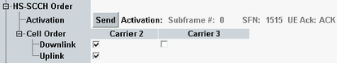

The following settings activate or deactivates multi-carrier operation in downlink and uplink. As prerequisite, the corresponding multi-carrier scenario must be selected.
Even if an additional carrier is disabled under the HS-SCCH order configuration, the RAB setup for the particular carrier is established during the connection setup anyway. This connection allows you to enable and activate the carrier later. |

Activates/deactivates additional downlink and uplink carrier in multi-carrier scenarios and queries the frame number, subframe number and acknowledgment related to the HS-SCCH order type 1 execution.
When a particular downlink frequency is deactivated, the corresponding uplink is also deactivated. However the deactivation of an uplink frequency does not imply the deactivation of the corresponding downlink.
Remote command: